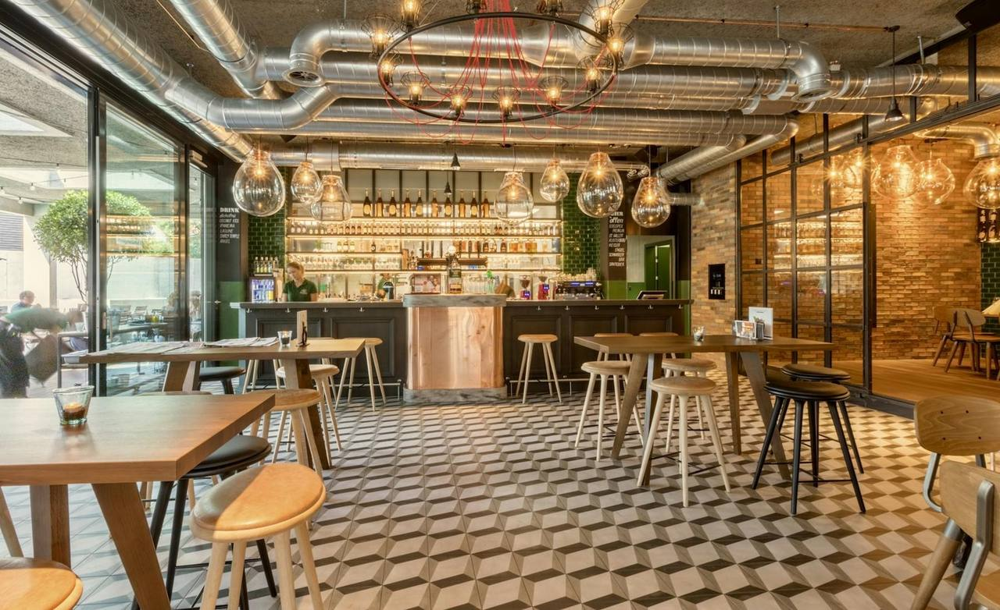
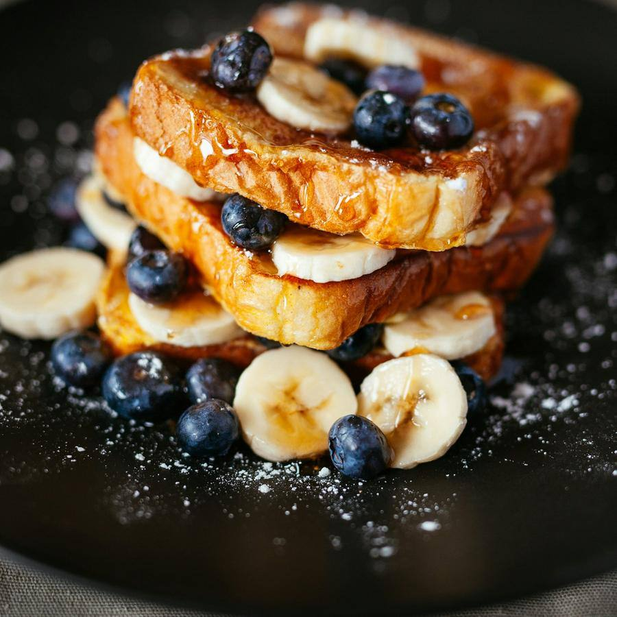
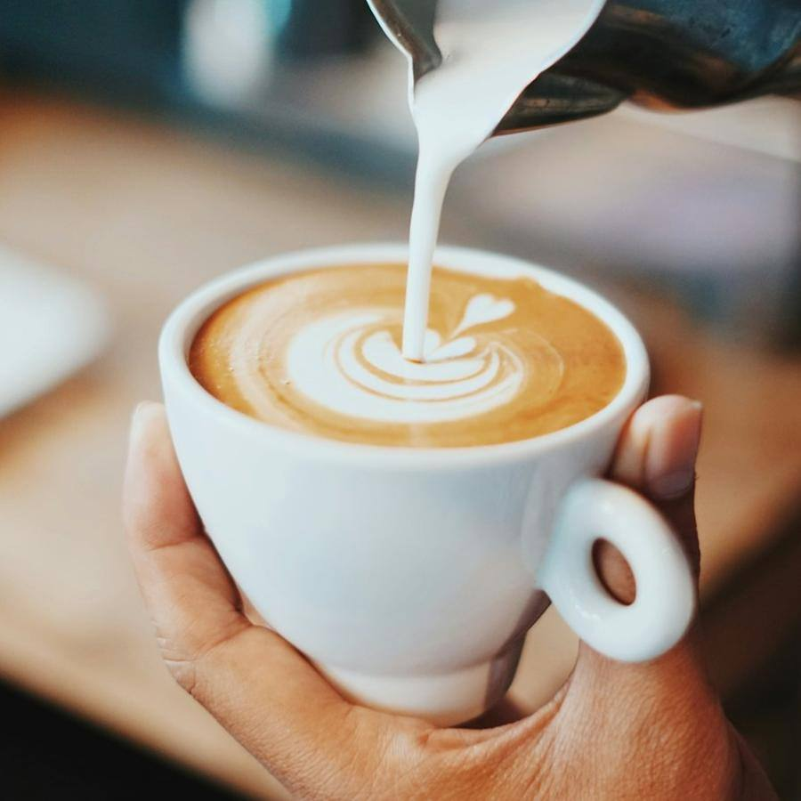

Brunch y café de especialidad · Centro, Alicante
Desayunos sin prisa y café de verdad
Pan de masa madre del día, huevos como deben ser y un flat white que justifica levantarse. En pleno centro de Alicante, con terraza a la sombra.
Por qué Café Almendro
Lo que nos diferencia
Masa madre de casa
Horneamos cada mañana a las seis. Si se acaba, se acaba.
Café de tueste local
Grano de un tostador de Alcoy, molido al momento para cada taza.
Opciones veganas y sin gluten
Marcadas en la carta y preparadas aparte, sin sustos.
Terraza con sombra
Doce mesas fuera, con perro incluido si viene contigo.
Brunch y café de especialidad
La carta
Cocina abierta de 8:30 a 14:00. Lo marcado como «favorito» es lo que más se pide.
Brunch

Brunch completo
14,50 €Huevos revueltos, aguacate, bacon crujiente, pan de masa madre, zumo y café.
favoritoHuevos benedictinos
10,50 €Sobre brioche tostado, con jamón asado y holandesa de la casa.
Tostada de aguacate
8,90 €Masa madre, aguacate, tomate seco, semillas y huevo poché.
vegetarianoFrench toast
9,50 €Brioche, frutos rojos, plátano y sirope de arce.
favorito
Café

Flat white
2,80 €Doble ristretto con leche texturizada fina.
favoritoEspresso
1,60 €Origen de temporada, pregunta cuál toca hoy.
Cold brew
3,40 €Doce horas de infusión en frío, con o sin tónica.
nuevoChai latte
3,20 €Especias molidas aquí, con leche de avena si quieres.
vegano
Dulce
Tarta del día
4,20 €Cada día una distinta. Hoy, zanahoria con crema de queso.
Bowl de açaí
7,80 €Açaí, granola casera, plátano, coco y mantequilla de cacahuete.
veganosin glutenCookie de chocolate
2,50 €Recién salida, con escamas de sal.
Galería
Pásate a verlo
Fotos del local y de lo que hacemos. Pulsa para verlas en grande.
Reseñas
Lo que dicen de nosotros
Reseñas de ejemplo: en tu web van las tuyas, enlazadas a tu ficha de Google.
- Marta G.hace 2 semanas5 de 5
El mejor brunch de Alicante sin discusión. El pan es otra cosa y el café, de diez. Fuimos un sábado y reservar fue facilísimo.
- Javier R.hace 1 mes5 de 5
Vengo cada mañana antes de trabajar. Te conocen, te ponen lo tuyo y siempre hay algo nuevo en la vitrina.
- Laura P.hace 3 semanas4 de 5
Huevos benedictinos espectaculares. Los findes se llena, así que mejor reservar mesa por la web.
- Pablo y Anahace 2 meses5 de 5
Celiaca en casa y nos lo pusieron facilísimo. Separan todo y lo explican sin que preguntes.
- Sergio M.hace 1 semana5 de 5
Terraza tranquila, perro bienvenido y el cold brew con tónica es un vicio.
- Elena C.hace 5 días5 de 5
Celebramos el cumple de mi madre con un brunch para ocho. Mesa preparada y una vela en la tarta sin pedirla.
Reservar mesa
Así funciona tu reserva
- 1
Elige día y hora
Ves los huecos libres al momento, sin llamar.
- 2
Te confirmamos
Recibes la confirmación por WhatsApp en minutos.
- 3
Mesa lista
Llegas y tu mesa te espera. Si vienes con perro, dínoslo.
El equipo
Quién te atiende
Lucía
Cocina y obrador
Empieza a las seis con el pan. Inventa la tarta del día.
Dani
Barista
Campeón regional de latte art 2024. Te recomienda origen.
Rocío
Sala
Se acuerda de cómo tomas el café a la segunda visita.
Visítanos
Dónde estamos
Horario
| Lunes | 8:30 – 14:00 |
|---|---|
| Martes | 8:30 – 14:00 |
| Miércoles | 8:30 – 14:00 |
| Jueves | 8:30 – 14:00 |
| Viernes | 8:30 – 14:00 |
| Sábado | 9:30 – 15:00 |
| Domingo | 9:30 – 15:00 |
Cómo llegar
- Parking Mercado Central a 4 minutos andando
- Tranvía L1 y L2, parada Mercado
- Aparcabicis en la puerta
Contacto
¿Hace falta reservar?
Entre semana casi nunca. Sábados y domingos de 10:00 a 13:00, sí: se llena.
¿Tenéis opciones sin gluten o veganas?
Sí, están marcadas en la carta. El pan sin gluten lo horneamos aparte.
¿Se puede ir con perro?
En la terraza, siempre. Te ponemos un cuenco de agua.
¿Hacéis encargos de tartas?
Sí, con 48 horas de antelación. Pídelo por WhatsApp.
Te esperamos en Centro
Pan de masa madre del día, huevos como deben ser y un flat white que justifica levantarse.
Reservar mesa¿Quieres una web así para tu negocio?
Café Almendro es un negocio inventado: esta página es una plantilla de ejemplo. La adapto a tu negocio con tus fotos, tus precios, tus reseñas y tu forma de reservar. Pruébala tal cual: la reserva funciona, pero no envía nada a nadie.
- Carta o servicios por categorías, galería y reseñas
- Reserva o cita en pocos pasos, con aviso por WhatsApp
- Lista para el móvil, rápida y sin cookies de terceros
- Aviso legal, privacidad y cookies incluidos